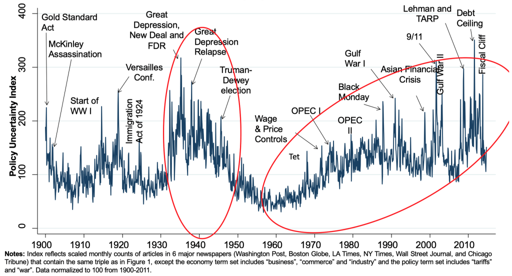
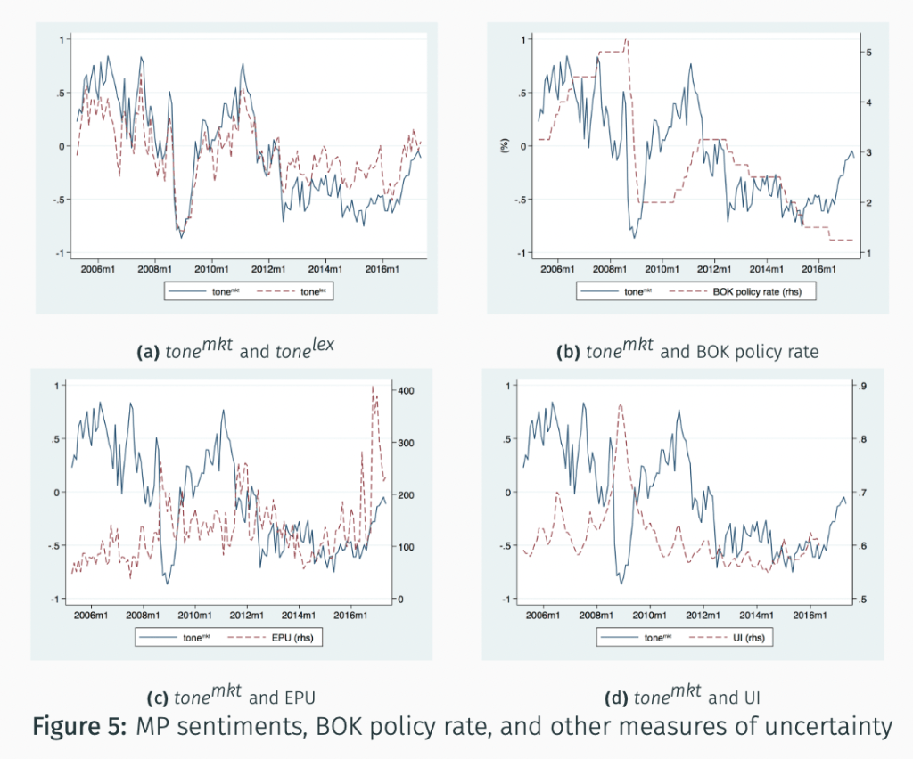
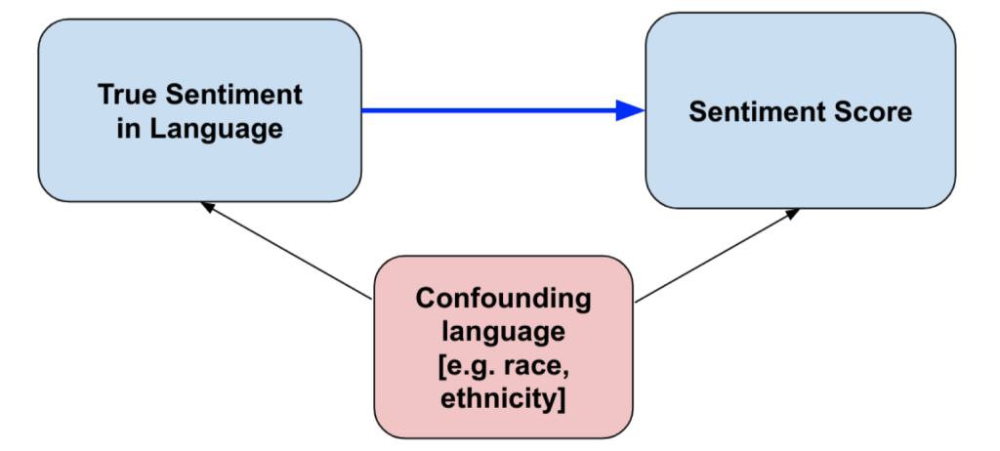
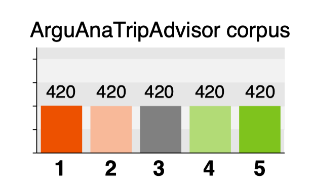
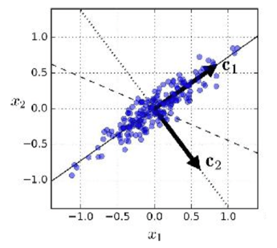
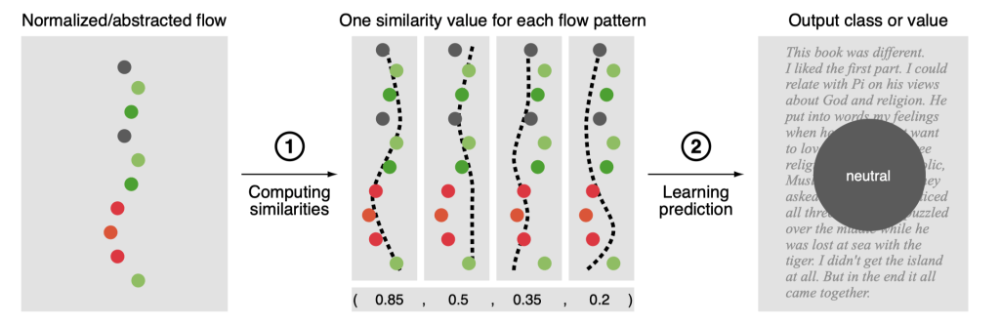
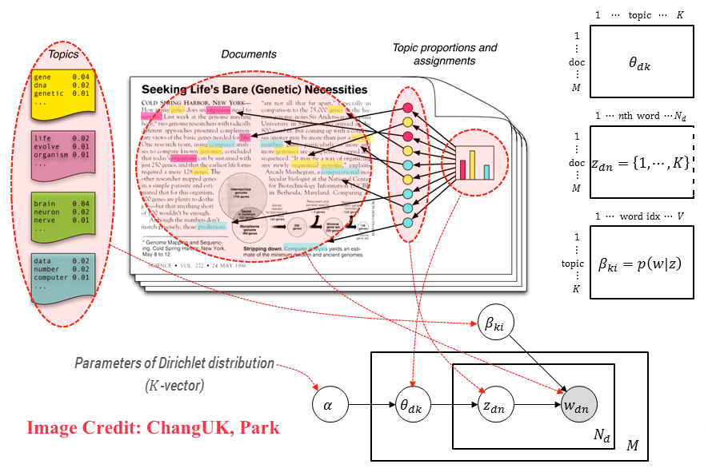

Sentiment Analysis
Contents
Sentiment Analysis#
What is sentiment analysis#
Sentiment analysis is the process of determining whether a piece of writing is positive, negative or neutral.
It’s also known as opinion mining, deriving the opinion or attitude of a speaker.
It applies natural language processing, text analysis, computational linguistics, and machine learning to identify and extract subjective information in source materials such as reviews, comments, and news articles.
The goal of sentiment analysis is to know the attitude of a speaker or writer with respect to some topic or the overall contextual polarity or emotional reaction to a document, interaction, or event.
Why sentiment analysis#
Sentiment analysis is a useful tool for businesses to understand the sentiment of their customers towards their brand, product or service.
It can also be used to understand the sentiment of their competitors.
Sentiment analysis can also be used to understand the sentiment of the general public towards certain issues.
Sentiment analysis types#
Depending on the scale of the sentiment analysis, there are three types of sentiment analysis:
Document-level sentiment analysis: This is the most common type of sentiment analysis. It is used to determine the overall sentiment of a document.
Sentence-level sentiment analysis: This type of sentiment analysis is used to determine the sentiment of a sentence within a document.
Aspect-level sentiment analysis: This type of sentiment analysis is used to determine the sentiment of a specific aspect of a document.
These three types of sentiment analysis can be grouped into two categories:
Coarse-grained sentiment analysis: This type of sentiment analysis is used to determine the overall sentiment of a document. It is also known as document-level sentiment analysis.
Fine-grained sentiment analysis: This type of sentiment analysis is used to determine the sentiment of a specific aspect of a document. It is also known as aspect-level sentiment analysis.
Or, depending on the number of classes, there are two types of sentiment analysis:
Binary sentiment analysis: This type of sentiment analysis is used to determine whether a document is positive or negative.
Multi-class sentiment analysis: This type of sentiment analysis is used to determine whether a document is positive, negative or neutral.
Or, depending on the method, there are two types of sentiment analysis:
Lexicon-based sentiment analysis: This type of sentiment analysis is used to determine the sentiment of a document by using a predefined list of positive and negative words.
Machine learning-based sentiment analysis: This type of sentiment analysis is used to determine the sentiment of a document by using machine learning algorithms.
Coarse-grained sentiment analysis#
Coarse-grained sentiment analysis entails two tasks: subjectivity classification and polarity classification.
Subjectivity classification
Subjective: The document expresses some personal feelings, views, or beliefs.
Objective: The document does not express any personal feelings, views, or beliefs.
Example: “I love this movie” is subjective, “The movie was released in 2019” is objective.
Polarity classification
Positive: The document expresses a positive sentiment.
Negative: The document expresses a negative sentiment.
Neutral: The document expresses no sentiment.
Example: “I love this movie” is positive, “I hate this movie” is negative, “I don’t care about this movie” is neutral.
Fine-grained sentiment analysis#
Fine-grained sentiment analysis entails one more task: aspect classification. Aspect means a specific feature of a product or service.
Lexicon-Based Methods#
Lexicon-based methods are based on a predefined list of positive and negative words.
Corpus-specific lexicons are built for a specific domain.
i.e. a lexicon for law-related documents (number of times a judge uses the word “guilty” in a document)
i.e. a lexicon for movie reviews (number of times a reviewer uses the word “good” in a document)
General dictionaries are built for a general domain.
WordNet: a general dictionary for English words
LIWC: Linguistic Inquiry and Word Count
MPQA: Multi-Perspective Question Answering
Measuring Economic Policy Uncertainty (EPU)#
This proxy for Economic Policy Uncertainty (EPU) comes from computer searches of newspapers
US index: 10 major papers get monthly counts of articles with:
E{economic or economy}, andP{regulation or deficit or federal reserve or congress or legislation or white house}, andU{uncertain or uncertainty}
Divide the count for each month by the count of all articles
Normalize and sum 10 papers to get the U.S monthly index
US News-based economic policy uncertainty index

Monetary Policy Stance#

WordNet#
WordNet is a general dictionary for English words.
English words are grouped into sets of synonyms called synsets.
Synonym sets (synsets) are interlinked by means of conceptual-semantic and lexical relations.
Words are organized into a category hierarchy.
antonym: a word that means the opposite of another word
holonym: a word that denotes a whole of which the other word is a part
meronym: a word that denotes a part of which the other word is a whole
hypernym: a word that denotes a more general concept than the other word
hyponym: a word that denotes a more specific concept than the other word
Example: the word “bass” has the following synsets:

WordNet Supersenses (Word Categories)

General Dictionaries#
LIWC (pronounced “Luke”): Linguistic Inquiry and Word Counts
2300 words 70 lists of category-relevant words, e.g. “emotion”, “cognition”, “work”, “family”, “positive”, “negative” etc.
Mohammad and Turney (2011):
code 10,000 words along four emotional dimensions: joy–sadness, anger-fear, trust-disgust, anticipation-surprise
Warriner et al (2013):
code 14,000 words along three emotional dimensions: valence, arousal, dominance.
Bing Liu’s Opinion Lexicon:
Positive words: 2006
Negative words: 4783
Useful properties: includes mis-spellings, morphological variants, slang, and social-media mark-up
MPQA Subjectivity Lexicon: maintained by Theresa Wilson, Janyce Wiebe, and Paul Hoffmann
SentiWordNet: attaches polarity scores to synsets in WordNet
Harvard General Inquirer:
a lexicon attaching syntactic, semantic, and pragmatic information to part-of-speech tagged words
MPQA Subjectivity Lexicon#
SentiWordNet#
Harvard General Inquirer#
LIWC#
Disagreement among Lexicons#
Underlying vocabularies are different among lexicons. Therefore, it is difficult to compare the results of different lexicons.
Bias in Lexicons#
NLP “Bias” is statistical bias
Sentiment scores that are trained on annotated datasets also learn from the correlated non-sentiment information.
Supervised sentiment models are confounded by correlated language factors.
e.g., in the training set maybe people complain about Mexican food more often than Italian food because Italian restaurants tend to be more upscale.

This is a universal problem
supervised models (classifiers, regressors) learn features that are correlated with the label being annotated.
unsupervised models (topic models, word embeddings) learn correlations between topics / contexts.
dictionary methods, while having other limitations, mitigate this problem
the researcher intentionally “regularizes” out spurious confounders with the targeted language dimension.
helps explain why economists often still use dictionary methods.
Building your own lexicons#
Much larger lexicons can be inferred from large corpora.
We can capture different dimensions of sentiment that might be important for a specific domain.
We can develop lexicons that are sensitive to the norms of specific domains.
Machine Learning Methods#
Supervised Methods#
Supervised methods are based on a predefined set of documents with known sentiment labels.
The sentiment labels are used to train a classifier.
The classifier is then used to predict the sentiment labels of new documents.
The classifier can be a linear classifier (e.g. logistic regression) or a non-linear classifier (e.g. support vector machine).
Unsupervised Methods#
Unsupervised methods are based on a predefined set of documents without known sentiment labels.
The documents are used to train a topic model.
The topic model is then used to predict the sentiment labels of new documents.
The topic model can be a probabilistic topic model (e.g. LDA) or a non-probabilistic topic model (e.g. LSA).
The sentiment labels are inferred from the topic model.
Supervised Classification#
What is supervised classification?
The learned prediction of the most likely of a set of \(k > 1\) predefined nominal classes for an instance.
Learning phase (training)
Input: a set of known instances \(x^{(i)}\) with correct output class \(c(x^{(i)} )\).
Output: a model \(X \to C\) that maps any instance to its output class.
Application phase (prediction)
Input: a set of unknown instances \(x^{(i)}\) without output classes.
Output: the output class \(c(x^{(i)} )\) for each instance.
Feature-based Classification#
Feature-based representation
A feature vector is an ordered set of values of the form \(x = (x_1 , \ldots , x_m )\).
Each feature \(x_j\) denotes a measurable property of an input, \(1 \le j \lt m\).
Each instance \(o_j\) is mapped to a vector \(x^{(i)} = (x_1^{(u)} , \ldots , x_m^{(i)} )\) where \(x_j^{(i)}\) denotes the value of feature \(x_j\) .
Text mining using feature-based classification
The main challenge is to engineer features that help solve a given task.
In addition, a suitable classification algorithm needs to be chosen.
Classification Algorithms#
Binary vs. multiple-class classification (recap)
Binary: many classification algorithms work for \(k = 2\) classes only.
Multiple: some algorithms can be extended to \(k > 2\) classes via multiple binary classifiers, e.g., one-versus-all.
Selected supervised classification algorithms
Naïve Bayes: predicts classes based on conditional probabilities.
Support vector machine: maximizes the margin between classes.
Decision tree: sequentially compares instances on single features.
Random forest: majority voting based on several decision trees.
Neural network: learns complex functions on feature combinations.
… and many more
Sentiment Classification in Practice#
Sentiment classification of reviews
Classification of the nominal sentiment polarity or score of a customer review on a product, service, or work of art.
Data
2100 English hotel reviews from TripAdvisor. 900 training, 600 validation, and 600 test reviews.
Each review has a sentiment score from {1, …, 5}.

Tasks
3-class sentiment: 1–2 mapped to negative, 3 to neutral, 4–5 to positive. Training set balanced with random undersampling.
5-class sentiment: each score interpreted as one (nominal) class.
Approach
Algorithm: linear SVM with one-versus-all multi-class handling.
Features: combination of several standard and specific feature types.
Feature Engineering#
What is feature engineering?
The design and development of the feature representation of instances used to address a given task.
The representation governs what patterns can be found during learning.
Standard vs. specific features
Standard: features that can be derived from (more or less) general linguistic phenomena and that may help in several tasks.
Specific: features that are engineered for a specific tasks, usually based on expert knowledge about the task.
Features covered here
Standard content features: token n-grams, target class features.
Standard style features: POS and phrase n-grams, stylometric features.
Specific features: local sentiment, discourse relations, flow patterns.
Some General Linguistic Phenomena

Standard Content Feature Types#
Token n-grams
Token unigrams (bag-of-words): the distribution of all token 1-grams that occur in at least 5% of all training texts.
Token bigrams/trigrams
Target class features
Core vocabulary: the distribution of all words that occur at least three times as often in one class as in every other.
Sentiment scores: the mean positivity, negativity, and objectivity of all first and average word senses in SentiWordNet.
Sentiment words: the distribution of all subjective words in SentiWordNet.
Standard Style Feature Types#
Part-of-speech (POS) tag n-grams
POS unigrams. The distribution of all part-of-speech 1-grams that occur in at least 5% of all training texts.
POS bigrams/trigrams. Analog for 2-grams and 3-grams.
Phrase type n-grams
Phrase unigrams. The distribution of all phrase type 1-grams that occur in at least 5% of all training texts.
Phrase bigrams/trigrams. Analog for 2-grams and 3-grams.
Stylometric features
Character trigrams. The distribution of all character 3-grams that occur in at least 5% of all training texts.
Function words. The distribution of the top 100 words in the training set.
Lexical statistics. Average numbers of tokens, clauses, and sentences.
Evaluation of the Standard Feature Types#

Evaluation
One linear SVM for each feature type alone and for their combination.
Training on training set, tuning on validation set, test on test set.
Discussion
Token unigrams: best, but some other types close.
Combination does not outperform best single feature type.
60.8% accuracy does not seem very good.
Review Argumentation#
Example hotel review
“We spent one night at that hotel. Staff at the front desk was very nice, the room was clean and cozy, and the hotel lies in the city center… but all this never justifies the price, which is outrageous!”
A shallow model of review argumentation
A review can be seen as a flow of local sentiments on domain concepts that are connected by discourse relations.
Specific Feature Types for Review Sentiment Analysis#
Local sentiment distribution
The frequencies of positive, neutral, and negative local sentiment as well as of changes of local sentiments.
positive 0.4 neutral 0.4 negative 0.2 (neutral, positive) 0.25 …
The average local sentiment value from 0.0 (negative) to 1.0 (positive).
average sentiment 0.6
The interpolated local sentiment at each normalized position in the text.
e.g., normalization length 9: (0.5, 0.75, 1.0, 1.0, 1.0, 0.75, 0.5, 0.25, 0.0)
Discourse relation distribution
The distribution of discourse relation types in the text.
background 0.25 elaboration 0.5 contrast 0.25 (all others 0.0)
The distribution of combinations of relation types and local sentiments.
background(neutral, positive) 0.25 elaboration(positive, positive) 0.25 …
Sentiment flow patterns
The similarity of the normalized flow of the text to each flow pattern.

Content and style features
Content: token n-grams, sentiment scores.
Style: part-of-speech n-grams, character trigrams, lexical statistics.
Evaluation of the Specific Feature Types#

Evaluation
One linear SVM for each feature type alone and for their combination.
Training on training set, tuning on validation set, test on test set.
Both 3-class and 5-class.
Cost hyperparameter tuning
Tested \(C\) values. 0.001, 0.01, 0.1, 1.0, 50.0
Best \(C\) used on test set.
Results shown here for the 3-class task only.
Results and Discussion for the Specific Features#
Effectiveness results on test set (accuracy)
Discussion
Content and style features: a bit weaker than in the experiment above, due to slight differences in the experiment setting.
Sentiment flow patterns: impact is more visible across domains.
Combination of features: works out this time, so more complementary.
The 5-class accuracy seems insufficient.
Classification misses to model the ordinal relation between classes; regression might be better.
Lexicon-based Methods in Practice#
%pip install ekorpkit
from ekorpkit.models.metrics import evaluate_classification_performance
import nltk
nltk.download('movie_reviews')
from nltk.corpus import movie_reviews
print('#review count:', len(movie_reviews.fileids()))
print('#samples of file ids:', movie_reviews.fileids()[:10])
print('#categories of reviews:', movie_reviews.categories())
print('#num of "neg" reviews:', len(movie_reviews.fileids(categories='neg')))
print('#num of "pos" reviews:', len(movie_reviews.fileids(categories='pos')))
fileid = movie_reviews.fileids()[0]
print('#id of the first review:', fileid)
print('#part of the first review:', movie_reviews.raw(fileid)[:500])
print('#sentiment of the first review:', movie_reviews.categories(fileid))
fileids = movie_reviews.fileids()
reviews = [movie_reviews.raw(fileid) for fileid in fileids]
categories = [movie_reviews.categories(fileid)[0] for fileid in fileids]
#review count: 2000
#samples of file ids: ['neg/cv000_29416.txt', 'neg/cv001_19502.txt', 'neg/cv002_17424.txt', 'neg/cv003_12683.txt', 'neg/cv004_12641.txt', 'neg/cv005_29357.txt', 'neg/cv006_17022.txt', 'neg/cv007_4992.txt', 'neg/cv008_29326.txt', 'neg/cv009_29417.txt']
#categories of reviews: ['neg', 'pos']
#num of "neg" reviews: 1000
#num of "pos" reviews: 1000
#id of the first review: neg/cv000_29416.txt
#part of the first review: plot : two teen couples go to a church party , drink and then drive .
they get into an accident .
one of the guys dies , but his girlfriend continues to see him in her life , and has nightmares .
what's the deal ?
watch the movie and " sorta " find out . . .
critique : a mind-fuck movie for the teen generation that touches on a very cool idea , but presents it in a very bad package .
which is what makes this review an even harder one to write , since i generally applaud films which attempt
#sentiment of the first review: ['neg']
[nltk_data] Downloading package movie_reviews to /root/nltk_data...
[nltk_data] Package movie_reviews is already up-to-date!
TextBlob#
%%capture
%pip install -U textblob
from textblob import TextBlob
result = TextBlob(reviews[0])
print(result.sentiment)
Sentiment(polarity=0.06479782948532947, subjectivity=0.5188408350908352)
def sentiment_TextBlob(docs):
results = []
for doc in docs:
testimonial = TextBlob(doc)
if testimonial.sentiment.polarity > 0:
results.append('pos')
else:
results.append('neg')
return results
predictions = sentiment_TextBlob(reviews)
cm = evaluate_classification_performance(categories, predictions)
Accuracy: 0.6
Precison: 0.7225010902553423
Recall: 0.6
F1 Score: 0.5361560556566348
Model Report:
___________________________________________________
precision recall f1-score support
neg 0.89 0.23 0.36 1000
pos 0.56 0.97 0.71 1000
accuracy 0.60 2000
macro avg 0.72 0.60 0.54 2000
weighted avg 0.72 0.60 0.54 2000
AFINN#
%%capture
%pip install afinn
from afinn import Afinn
def sentiment_Afinn(docs):
afn = Afinn(emoticons=True)
results = []
for doc in docs:
if afn.score(doc) > 0:
results.append('pos')
else:
results.append('neg')
return results
predictions = sentiment_Afinn(reviews)
cm = evaluate_classification_performance(categories, predictions)
Accuracy: 0.664
Precison: 0.6783880680137142
Recall: 0.664
F1 Score: 0.6570854714462421
Model Report:
___________________________________________________
precision recall f1-score support
neg 0.73 0.52 0.61 1000
pos 0.63 0.81 0.71 1000
accuracy 0.66 2000
macro avg 0.68 0.66 0.66 2000
weighted avg 0.68 0.66 0.66 2000
VADER#
%%capture
import nltk
nltk.download('vader_lexicon')
[nltk_data] Downloading package vader_lexicon to /root/nltk_data...
[nltk_data] Package vader_lexicon is already up-to-date!
from nltk.sentiment.vader import SentimentIntensityAnalyzer
def sentiment_vader(docs):
analyser = SentimentIntensityAnalyzer()
results = []
for doc in docs:
score = analyser.polarity_scores(doc)
if score['compound'] > 0:
results.append('pos')
else:
results.append('neg')
return results
predictions = sentiment_vader(reviews)
cm = evaluate_classification_performance(categories, predictions)
Accuracy: 0.635
Precison: 0.6580655585685583
Recall: 0.635
F1 Score: 0.6211802777111816
Model Report:
___________________________________________________
precision recall f1-score support
neg 0.72 0.44 0.55 1000
pos 0.60 0.83 0.69 1000
accuracy 0.64 2000
macro avg 0.66 0.64 0.62 2000
weighted avg 0.66 0.64 0.62 2000